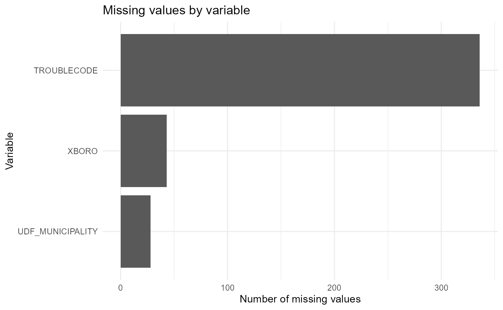
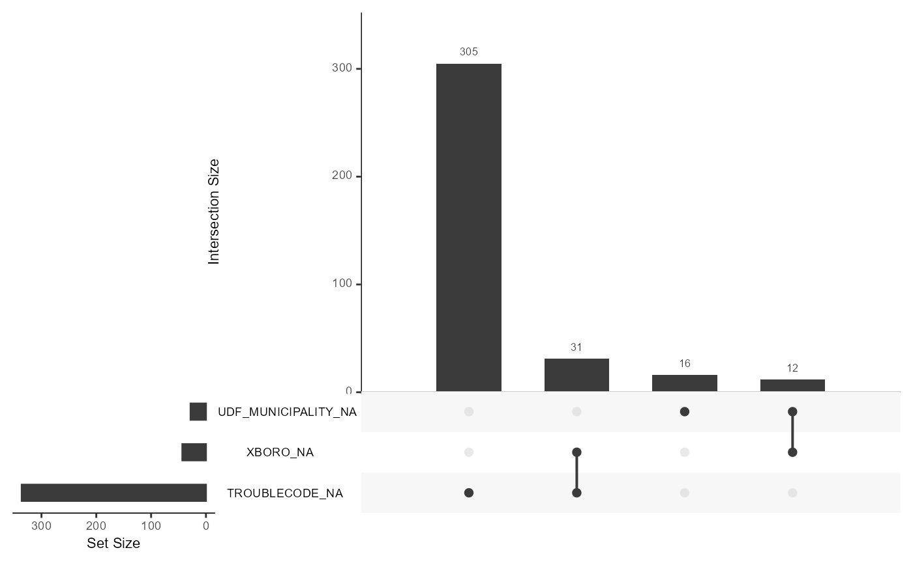

Data
data.rmdDescription
We are using a dataset sourced from Con Edison’s Outage Management System (OMS). For context, Con Edison is a utility based in New York City. It provides electricity, gas, and steam for NYC and Westchester County. The OMS team analyzes and reports power outage and non-outage events across all 5 boroughs and Westchester. The event-level columns we’re using are: Event ID - a unique identifier per record Total Customers Affected - the number of customers out of power on the particular event Start Date - the date and time that the event began Restoration Date - the date and time that the power was restored for the particular event Completed Date - the date and time that the event was completed. If the event is a non-outage, the restoration and the completed date will be the same. Momentary Event Flag - displays 1 if the event is a momentary event, 0 if the event is not. Momentaries are events that are restored within 15 min of their start date. Device Type - the type of device affected on the event. Devices are the structures that provide power to customers. One device can supply power to multiple residencies. Device Outage Flag - displays 1 if the device is out, 0 if the device on the event is not. Outage Flag - displays 1 if the event has customers out of power, 0 if there are no customers affected. XBoro - the name of the Borough where the event is located Udf Municipality - For NYC, this is the name of the borough where the event is located. For Westchester, this is the name of the specific muni where the event is located. Trouble Code - the short code describing clues for the event. There is a legend mapping the trouble code short name to the long name e.g. NL = No lights, SO = Side Off.
We are using a year’s worth of data from October 2024 to October 2025.
suppressPackageStartupMessages({
library(tidyverse)
library(fs)
})
data_path <- fs::path("..","inst/extdata", "PackageData.csv")
outages_raw <- readr::read_csv(data_path, show_col_types = FALSE)
source(fs::path("..","R", "MissingAnalysis.R"))
summary(outages_raw)## STARTDATE RESTDATE
## Min. :2024-10-25 00:05:00 Min. :2024-10-25 00:14:02
## 1st Qu.:2025-02-12 16:06:54 1st Qu.:2025-02-17 10:42:30
## Median :2025-05-08 15:32:11 Median :2025-05-12 18:03:53
## Mean :2025-05-02 14:21:44 Mean :2025-05-07 11:11:02
## 3rd Qu.:2025-07-14 05:08:01 3rd Qu.:2025-07-19 20:56:11
## Max. :2025-10-24 23:24:56 Max. :2025-10-28 16:39:35
## COMPDATE EVENTID TOTALCUSTAFFECTED
## Min. :2024-10-25 00:14:02 Min. :3524920 Min. : 0.00
## 1st Qu.:2025-02-17 12:55:53 1st Qu.:3745292 1st Qu.: 0.00
## Median :2025-05-12 19:00:13 Median :3809224 Median : 0.00
## Mean :2025-05-07 14:19:10 Mean :3815083 Mean : 5.05
## 3rd Qu.:2025-07-20 00:26:12 3rd Qu.:3883297 3rd Qu.: 0.00
## Max. :2025-10-28 16:39:36 Max. :3954701 Max. :5976.00
## MOMENTARYEVENTFLAG DEVICETYPE DEVICEOUTAGEFLAG OUTAGEFLAG
## Min. :0.0000 Length:145404 Min. :0.00000 Min. :0.0000
## 1st Qu.:0.0000 Class :character 1st Qu.:0.00000 1st Qu.:0.0000
## Median :0.0000 Mode :character Median :0.00000 Median :0.0000
## Mean :0.1185 Mean :0.06315 Mean :0.1177
## 3rd Qu.:0.0000 3rd Qu.:0.00000 3rd Qu.:0.0000
## Max. :1.0000 Max. :1.00000 Max. :1.0000
## XBORO UDF_MUNICIPALITY TROUBLECODE
## Length:145404 Length:145404 Length:145404
## Class :character Class :character Class :character
## Mode :character Mode :character Mode :character
##
##
## Data Cleaning Principles
We cleaned the Con Edison outage dataset by standardizing all date
fields, correcting common formatting errors, and enforcing chronological
consistency across STARTDATE, RESTDATE, and COMPDATE. Empty strings were
converted to missing values prior to parsing, and mixed timestamp
formats were resolved using flexible parse_date_time()
rules. Because some outages incorrectly reported 2023 timestamps,
restoration and completion dates labeled as 2023 were shifted forward by
one year. Records missing critical fields such as COMPDATE or
TOTALCUSTAFFECTED were removed. Categorical fields such as XBORO were
normalized to uppercase to support grouping and visualization. The
resulting dataset is tidy and chronologically valid.
Missing value analysis
In our preprocessing workflow, we first removed rows missing COMPDATE or TOTALCUSTAFFECTED. These two fields are essential: COMPDATE is required to compute outage duration, while TOTALCUSTAFFECTED determines the severity of an event. After filtering out these critical cases, our missing value analysis focuses only on UDF_MUNICIPALITY, TROUBLECODE, and unknown borough entries (“-NDA-”) in XBORO.
missing_tbl <- missing_nonzero(outages_raw, treat_ndas = TRUE)
missing_tbl## # A tibble: 3 × 3
## variable na_count na_percent
## <chr> <int> <dbl>
## 1 TROUBLECODE 336 0.231
## 2 XBORO 43 0.0296
## 3 UDF_MUNICIPALITY 28 0.0193
plot_missing_bar(outages_raw, treat_ndas = TRUE, only_nonzero = TRUE)
# Upset plot for missingness pattern
plot_missing_upset(outages_raw, treat_ndas = TRUE)## Warning: `aes_string()` was deprecated in ggplot2 3.0.0.
## ℹ Please use tidy evaluation idioms with `aes()`.
## ℹ See also `vignette("ggplot2-in-packages")` for more information.
## ℹ The deprecated feature was likely used in the UpSetR package.
## Please report the issue to the authors.
## This warning is displayed once every 8 hours.
## Call `lifecycle::last_lifecycle_warnings()` to see where this warning was
## generated.## Warning: Using `size` aesthetic for lines was deprecated in ggplot2 3.4.0.
## ℹ Please use `linewidth` instead.
## ℹ The deprecated feature was likely used in the UpSetR package.
## Please report the issue to the authors.
## This warning is displayed once every 8 hours.
## Call `lifecycle::last_lifecycle_warnings()` to see where this warning was
## generated.## Warning: The `size` argument of `element_line()` is deprecated as of ggplot2 3.4.0.
## ℹ Please use the `linewidth` argument instead.
## ℹ The deprecated feature was likely used in the UpSetR package.
## Please report the issue to the authors.
## This warning is displayed once every 8 hours.
## Call `lifecycle::last_lifecycle_warnings()` to see where this warning was
## generated.
Most missingness is isolated to TROUBLECODE, but very
few observations are missing multiple fields at once, indicating that
missingness is sparse.